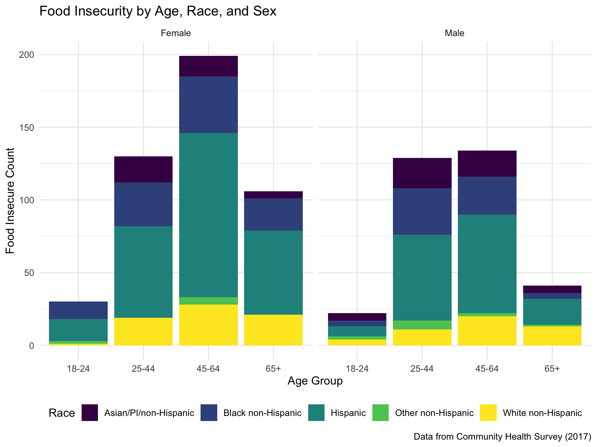
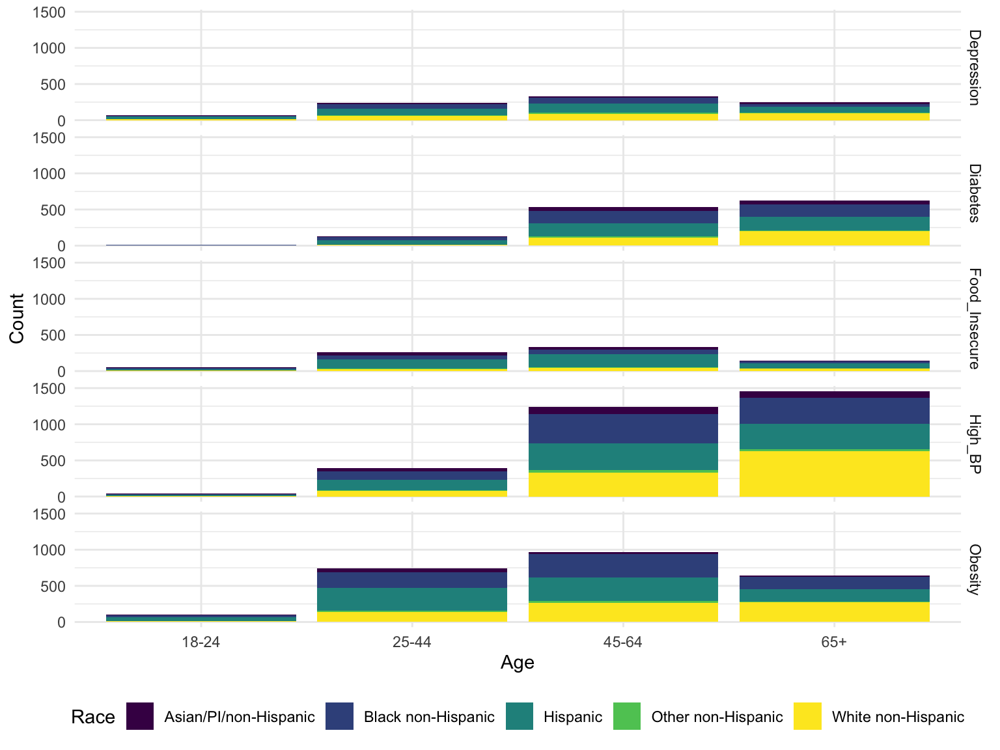
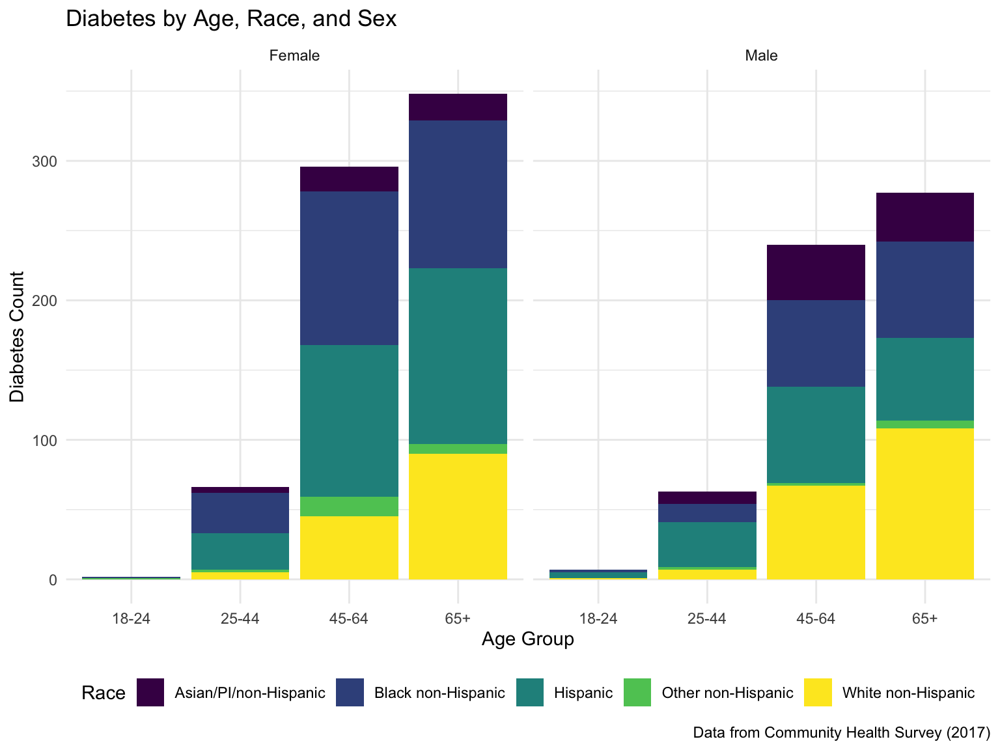
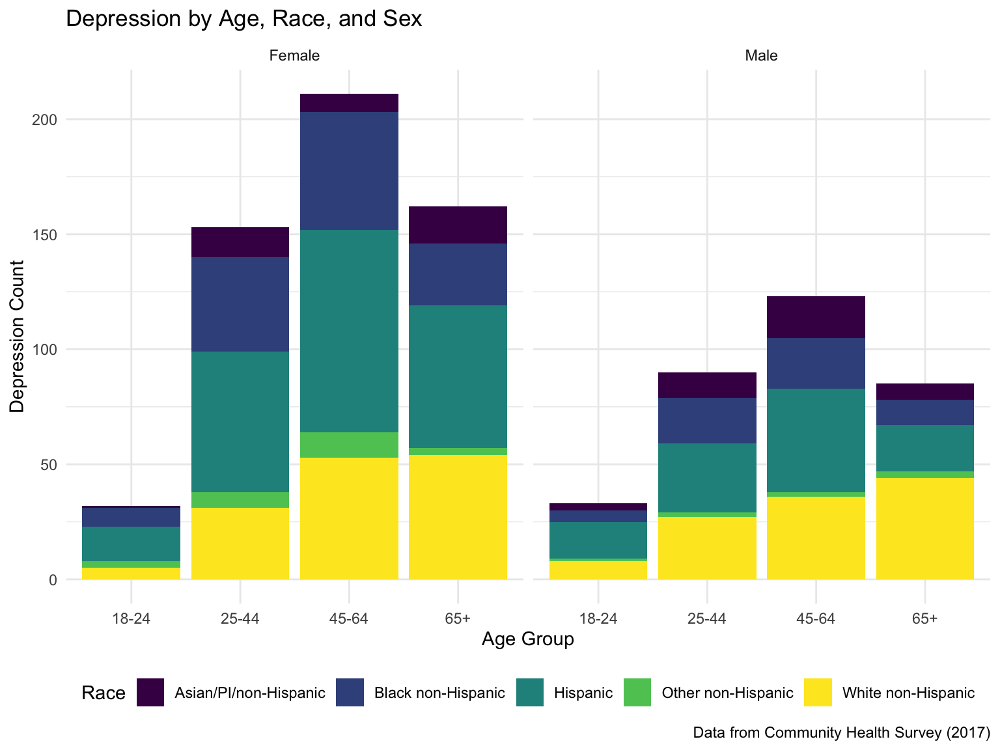

Chronic Health and Food Insecurity
data_clean =
data %>%
select(imputed_foodinsecure, toldhighbp17, diabetes17, weight17in4, currdepress, agegroup, sex, newrace) %>%
mutate(
imputed_foodinsecure = recode(imputed_foodinsecure,
"1" = "0",
"2" = "0",
"3" = "1",
"4" = "1"),
imputed_foodinsecure = as.numeric(imputed_foodinsecure),
toldhighbp17 = recode(toldhighbp17,
"1" = "1",
"2" = "0"),
toldhighbp17 = as.numeric(toldhighbp17),
diabetes17 = recode(diabetes17,
"1" = "1",
"2" = "0"),
diabetes17 = as.numeric(diabetes17),
weight17in4 = recode(weight17in4,
"1" = "0",
"2" = "0",
"3" = "0",
"4" = "1"),
weight17in4 = as.numeric(weight17in4),
currdepress = recode(currdepress,
"1" = "1",
"2" = "0"),
currdepress = as.numeric(currdepress),
agegroup = recode(agegroup,
"1" = "18-24",
"2" = "25-44",
"3" = "45-64",
"4" = "65+"),
sex = recode(sex,
"1" = "Male",
"2" = "Female"),
newrace = recode(newrace,
"1" = "White non-Hispanic",
"2" = "Black non-Hispanic",
"3" = "Hispanic",
"4" = "Asian/PI/non-Hispanic",
"5" = "Other non-Hispanic"),
) %>%
rename("Food_Insecure" = imputed_foodinsecure,
"High_BP" = toldhighbp17,
"Diabetes" = diabetes17,
"Obesity" = weight17in4,
"Depression" = currdepress,
"Age" = agegroup,
"Sex" = sex,
"Race" = newrace) %>%
drop_na()
data_longer =
data_clean %>%
pivot_longer(
Food_Insecure:Depression,
names_to = "outcome",
values_to = "n",
names_repair = "minimal"
) %>%
rename("case" = n) %>%
filter(case == 1) %>%
group_by(Age, Race, Sex, outcome) %>%
summarize(Count = n())Distribution Food Insecurity
data_clean %>%
select(Age, Food_Insecure, Race, Sex) %>%
count(Age, Food_Insecure, Race, Sex) %>%
group_by(Age, Race, Sex) %>%
mutate(
total = sum(n)) %>%
filter(Food_Insecure == "1") %>%
mutate(
Total_Insecure = sum(n),
Proportion = Total_Insecure / total) %>%
ggplot() +
geom_col(aes(x = Age, y = Total_Insecure, fill = Race)) +
facet_wrap(Sex ~.) +
labs(
x = "Age Group",
y = "Food Insecure Count",
title = "Food Insecurity by Age, Race, and Sex",
caption = "Data from Community Health Survey (2017)"
)
{.tabset} ————————————-
Distribution High Blood Pressure
plot4 =
data_clean %>%
select(Age, High_BP, Race, Sex) %>%
count(Age, High_BP, Race, Sex) %>%
group_by(Age, Race, Sex) %>%
mutate(
total = sum(n)) %>%
filter(High_BP == "1") %>%
mutate(
Total_High_BP = sum(n),
Proportion = Total_High_BP / total)
plot4 %>%
ggplot() +
geom_col(aes(x = Age, y = Total_High_BP, fill = Race)) +
facet_wrap(Sex ~.) +
labs(
x = "Age Group",
y = "High Blood Pressure Count",
title = "High Blood Pressure by Age, Race, and Sex",
caption = "Data from Community Health Survey (2017)"
)
Distribution Obesity
plot2 =
data_clean %>%
select(Age, Obesity, Race, Sex) %>%
count(Age, Obesity, Race, Sex) %>%
group_by(Age, Race, Sex) %>%
mutate(
total = sum(n)) %>%
filter(Obesity == "1") %>%
mutate(
Total_Obese = sum(n),
Proportion = Total_Obese / total)
plot2 %>%
ggplot() +
geom_col(aes(x = Age, y = Total_Obese, fill = Race)) +
facet_wrap(Sex ~.) +
labs(
x = "Age Group",
y = "Obesity Count",
title = "Obesity by Age, Race, and Sex",
caption = "Data from Community Health Survey (2017)"
)
Distribution Diabetes
plot3 =
data_clean %>%
select(Age, Diabetes, Race, Sex) %>%
count(Age, Diabetes, Race, Sex) %>%
group_by(Age, Race, Sex) %>%
mutate(
total = sum(n)) %>%
filter(Diabetes == "1") %>%
mutate(
Total_Diabetes = sum(n),
Proportion = Total_Diabetes / total)
plot3 %>%
ggplot() +
geom_col(aes(x = Age, y = Total_Diabetes, fill = Race)) +
facet_wrap(Sex ~.) +
labs(
x = "Age Group",
y = "Diabetes Count",
title = "Diabetes by Age, Race, and Sex",
caption = "Data from Community Health Survey (2017)"
)
Distribution Depression
plot5 =
data_clean %>%
select(Age, Depression, Race, Sex) %>%
count(Age, Depression, Race, Sex) %>%
group_by(Age, Race, Sex) %>%
mutate(
total = sum(n)) %>%
filter(Depression == "1") %>%
mutate(
Total_Depress = sum(n),
Proportion = Total_Depress / total)
plot5 %>%
ggplot() +
geom_col(aes(x = Age, y = Total_Depress, fill = Race)) +
facet_wrap(Sex ~.) +
labs(
x = "Age Group",
y = "Depression Count",
title = "Depression by Age, Race, and Sex",
caption = "Data from Community Health Survey (2017)"
)